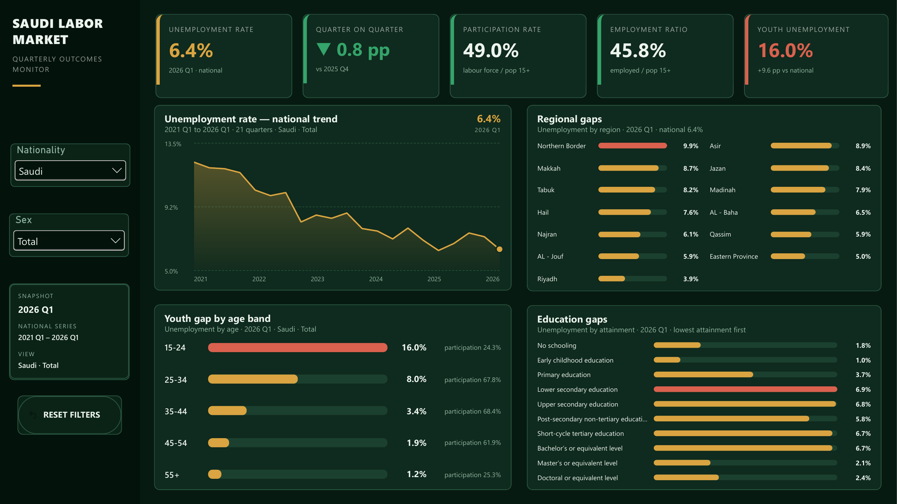

Labour market analytics
Saudi Labor Market Quarterly Outcomes Monitor
An interactive Power BI dashboard that connects the latest national outcome to a five-year trend, then reveals differences by region, age band, and education level.
- PlatformPower BI · DAX · Power Query
- VisualsNative charts · HTML Content
- DataPublic GASTAT Labour Force Survey

One page from headline rate to population gaps
Native Power BI charts move from a 21-quarter national trend to comparisons by region, age, and education. HTML Content is used for the KPI cards and branded sidebar.
Business question
How do national labour outcomes change across time and population groups?
A single national rate can hide meaningful differences. This dashboard gives policy and research users a fast path from the latest quarter to the longer-term direction, then lets them compare the groups and regions behind the headline.
- Latest outcomeWhat is the current national result?
- Quarterly movementHow did it change from the prior quarter?
- Regional gapsWhich regions differ most from the national rate?
- Population gapsWhich age and education groups face the widest differences?
Approach
A consistent model across four analytical views
I prepared the published GASTAT tables in Power Query and modeled the data at quarter, breakdown, category, nationality, and sex level. DAX measures control the latest-quarter values, prior-quarter comparison, and responsive national, regional, age, and education views. I used the HTML Content custom visual by Daniel Marsh-Patrick for the KPI cards and branded sidebar, while the four analytical panels use native Power BI visuals.
- HTML Content KPI cards show unemployment, quarterly movement, participation, employment, and youth unemployment.
- A native line chart gives 21 quarters of context instead of treating the latest value in isolation.
- A native regional bar chart ranks the latest results and supports chart interactions.
- Native age and education charts expose demographic differences while retaining the selected nationality and sex.
Data context
Public source with transparent scope
Source: General Authority for Statistics, Saudi Arabia, Labour Market Statistics Q1 2026. The national series covers 2021 Q1 through 2026 Q1; detailed region, age, and education views show the latest quarter.
The dashboard reports published survey rates. Because the public tables do not include microdata, weights, or confidence intervals, the detailed comparisons are presented descriptively rather than as tests of statistical significance.
Native dashboard views
From national direction to demographic gaps
Native Power BI charts support cross-filtering, tooltips, drill, and export. Select any image to inspect it at full size.
Twenty-one quarters put the latest result in context.
The ranked view makes geographic differences immediately visible.
Age and attainment views reveal where headline outcomes diverge.